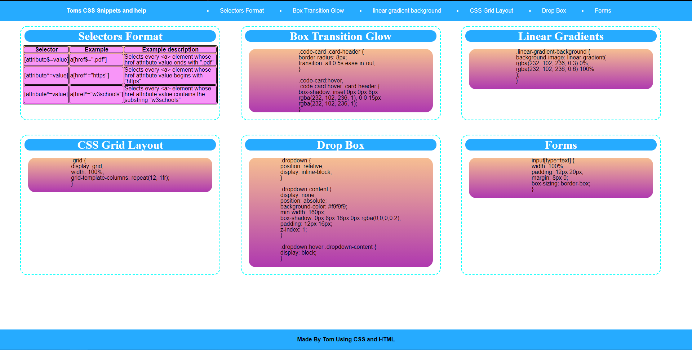

My Work
Css-Snippets
Css-Snippets Is The first website i made from scratch, learning how to create many different styles and effects through Css. Obviously as a newcomer it's quite the basic site with some links and references for me to come back too if i need to refer back to some of my earlier Work
Horiseon
Though I didn't make Horiseon from scratch this is the other complete website I have worked on. Whilst working on it I debugged some code to make sure all links worked properly and cleaned up the code as there was lots of repeating and unnecesary code, as well as lots of repeat values instead of variables.
.png)
Css-Snippets
Css-Snippets Is The first website i made from scratch, learning how to create many different styles and effects through Css.
Css-Snippets
Css-Snippets Is The first website i made from scratch, learning how to create many different styles and effects through Css.
Css-Snippets
Css-Snippets Is The first website i made from scratch, learning how to create many different styles and effects through Css.
About Me
I'm Tom, located in Victoria Australia and am currently a junior web developer, still in very early days but am making progress towards getting better every day. As of the moment I have made one website from scratch, Css-Snippets. I have done cleaning as well as debugging of code on Horiseon's Websites and am looking to expand my skills. Outside of the coding industry i love playing games and reading. One of my favourite seasonal hobbies is Snowboarding, which i get to partake in at Mt Buller and Mt Hotham. I also love watersports such as Kneeboarding, WakeBoarding, and more.
Contact Me
- Github-https://github.com/Thomas21119
- Email-thomas.wittwer2018@gmail.com
- Phone Number-0490923053